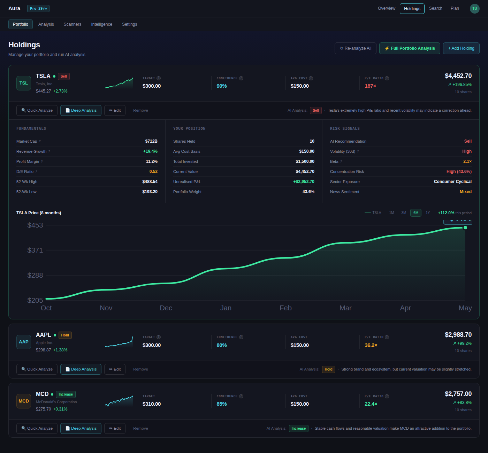

Designing Trust in AI-Powered Investing
Financial Aura is an AI-powered investment research platform designed to help users analyze portfolios, evaluate stocks, and receive personalized financial insights through conversational AI tools. Before launch, the Financial Aura team wanted to better understand how real users interacted with the platform. While the product offered advanced AI-driven functionality and a visually polished interface, there were concerns about whether users would fully understand the platform’s purpose, successfully navigate its features, and trust the insights being presented.
As part of a UX research team, I helped conduct a moderated usability study to evaluate the platform’s usability, information hierarchy, AI discoverability, and onboarding clarity. This case study documents our research process, findings, and recommendations (figures 2 and 3) for what Financial Aura can implement in the future. This case study reflects on what I learned and contributed throughout the project.
The Guiding Challenge
Financial Aura sits at the intersection of fintech and AI. Unlike traditional investment apps, the platform focuses on research and portfolio analysis over stock trading itself. The knowledge of that distinction became the central challenge of the project. In addition, the client wanted to answer several important questions from user insights: Would users understand what Financial Aura actually does? Could users easily navigate the platform’s core workflows? Would users trust and understand AI-generated investment insights? Were the platform’s most valuable features easy to discover? Could intermediate investors interpret the financial metrics confidently? The platform already looked polished and modern, but our purpose was to test its usability. Our goal was to evaluate whether the experience actually aligned with user expectations and mental models.
